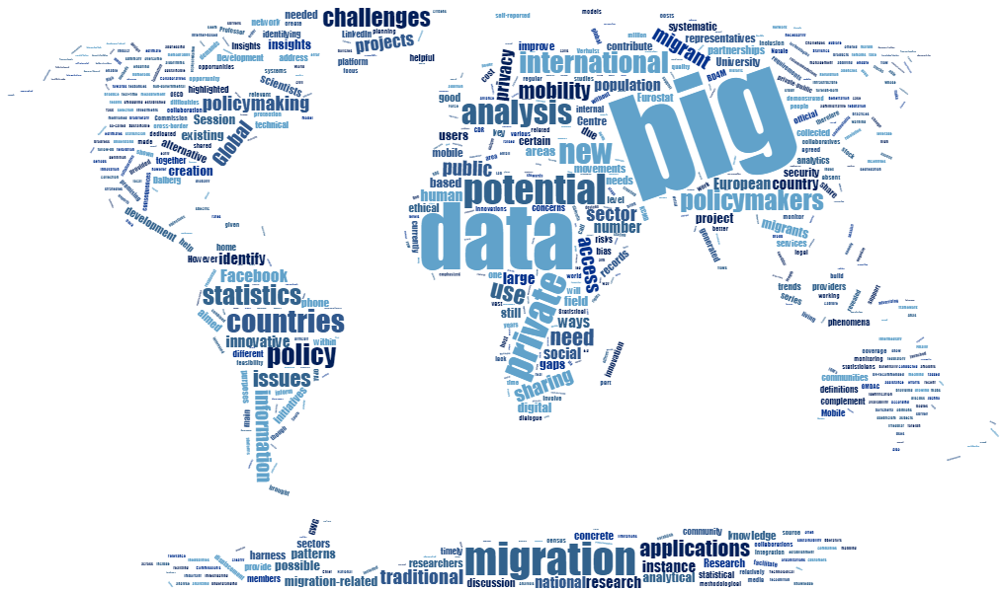

Big data is a combination of structured, semistructured and unstructured data collected by organizations that can be mined for information and used in machine learning projects, predictive modeling and other advanced analytics applications. Systems that process and store big data have become a common component of data management architectures in organizations.
These characteristics were first identified by Doug Laney, then an analyst at Meta Group Inc., in 2001. Gartner further popularized them after it acquired Meta Group in 2005. More recently, several other Vs have been added to different descriptions of big data, including veracity, value and variability. Although big data doesn't equate to any specific volume of data, big data deployments often involve terabytes (TB), petabytes (PB) and even exabytes (EB) of data captured over time.
Companies use the big data accumulated in their systems to improve operations, provide better customer service, create personalized marketing campaigns based on specific customer preferences and, ultimately, increase profitability. Businesses that utilize big data hold a potential competitive advantage over those that don't since they're able to make faster and more informed business decisions, provided they use the data effectively. For example, big data can provide companies with valuable insights into their customers that can be used to refine marketing campaigns and techniques in order to increase customer engagement and conversion rates.